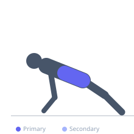
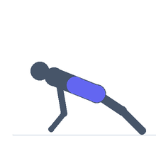

Exercise guide / Plank
Plank
The plank is an isometric core stability exercise in which the body is held in a push-up position with the forearms or hands on the floor. It trains the transverse abdominis, rectus abdominis, and stabilizing muscles of the spine to resist extension, making it fundamental for core stability, lower back health, and athletic performance.
Primary muscles
transverse abdominis
rectus abdominis
Secondary muscles
internal oblique
external oblique
Stabilizers
erector spinae
gluteus maximus
Equipment
No Equipment (Bodyweight)


Starting position
- Lie face down. Place forearms on the floor with elbows directly below the shoulders. Push up onto the forearms and toes so the body forms a straight line from head to heels.
Setup
- No equipment required. Use a mat for forearm comfort. Keep the body in one rigid line — no hip sag or piking.
Steps
- Squeeze the glutes and brace the core by tightening the abdominals.
- Maintain a neutral spine — the head, hips, and heels should form a straight line.
- Hold the position for the prescribed duration while breathing normally.
Coaching cues
- Squeeze your glutes hard — this automatically protects the lower back
- Think about pulling your elbows toward your feet — this activates the core further
Breathing
- Breathe in and out normally throughout the hold — do not hold your breath.
Range of motion
- Isometric hold. No joint movement — maintain the position for the target duration.
Tempo
- Hold for 20–60 seconds per set, progressing duration over time
Common mistakes
- Hips sagging downward — squeeze the glutes to prevent this
- Hips raised too high, piking at the waist
- Neck too low or raised — keep a neutral head position
Safety
- If lower back pain occurs, reduce duration or perform on knees
Training
- endurance: 3–5 reps
- endurance: 3–5 sets
- Rest: {'endurance': 30}